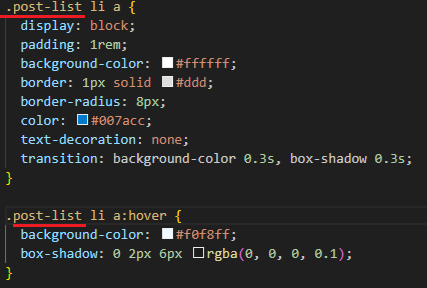

カテゴリ：ブログ作成～公開後～
投稿日：2025年5月20日
12回目となる今回は、いよいよページ全体のレイアウトを整えていきます！！
現在のレイアウトはこんな感じ。
・・・はい・・・。殺風景ですねぇ。。。いかにも文字を羅列しただけのような見た目。
こんなんじゃ来てくれた方も即戻るボタンを押すことでしょう！
とは言ったもののなにをどうしたらいいのかまったくわからないのでChatGPTに聞いてみましょう！
まずはどこを整えたいか決めましょう！ここでスターターコードというコード例を出してくれているのですが、 話を進めていくと変わる可能性があるのでここではブログ全体のレイアウトをオシャレにするという方向で話を進めます。
すると大まかなイメージを文章化して伝えてくれて、実際のコードも出してくれます。
変化後を見てからのほうがコードがわかりやすいと思うので、style.cssにコードを入力します。
CSSファイルにコードを新たに打ち込んだ場合、重複する部分は上書きされるのでそのまま追加しても良いそうですが、
今回はまるまる書き換えました！
↓↓その結果がこちら↓↓
おお～～～。少しマシになったかな！
今回のオシャレポイントはこちら。
・bodyタグ内の、max-width: 800pxで行が長すぎてしまうことを防いでいます。
・line-height（行の高さ）を1.7にすることで、行間を空けて文字がすっきり見えるようにしています。
font-familyは柔らかめの現代風フォントだそうです！
・hoverエフェクトはマウスカーソルを合わせたときのエフェクトで、以前はオレンジに変化していましたが
今回は色は変化せずアンダーバーが出るのみになりました。
ここは前のほうが良かったかな？
・.post-navは以前設定しましたね！
他にも気になる点で言えば、サイズを指定するときの単位にremが使われています。
pxが絶対値で指定するのに対して、これは相対値で指定するものだそうです。
そして1emで基準値と同じ値なので、3remは元のサイズの3倍だよ！ってことみたいです。
ホバー時のエフェクトを編集しましょう！style.cssを開いて

a:hoverのcolor値を編集します。
色のコードにカーソルを合わせるとパレット？が出てくるのがすごい便利！！
これでホバー時の挙動が戻りましたね！
あとはh1タグ（トップページでいうと一番上のおじめもブログ）の部分を目立たせたい！
目立たせるには、フォントを大きく！色で印象づける！下にラインを引く！余白と中央ぞろえで整える！だそうです！
って感じみたいです！早速やってみましょう！
ムムムッ！？中央揃えになってませんねぇ
他のページは中央揃えになってるのに！
原因をChatGPTに色々聞いてみたのですが、どうやらdisplay: inline-block;が原因みたいです。
これを指定することにより要素自身の幅が狭まり、中央揃えにならない可能性があるようです。
文字に合わせて下線を引くためにdisplayをinline-blockに設定しましたが、線を引くだけなら不要とのことなので消してみました。
おおー！！！中央揃えになりました！下線の長さが文字に合わせた長さではなくなりましたが、このほうがマシですね！
あとは<li>の書き方が以前と比べてわかりにくくなっています。
こちらが以前のもので、
新しいものがこちらで、他の文章と変化が無くなっています。これをわかりやすく変更します！
原因は、リストの「・」が消えている。左の余白（インデント）が無くなっている。です。
マークはつけずにデザインで区別する案もくれたのですが、今回はシンプルな方法を採用します！

これで以前のようなリストになりました！更新履歴はこのままがいいのですが、
方法3の見た目が少し気になりました。
リンクをカード風に見せるとのことで、記事リスト向けだそうです！
これを適用してみると、、、
あらおしゃれ！！！これを記事一覧だけに適用させたいので、class名を追加します。
ulリストにpost-listというクラス名を追加します。
そしてstyle.cssにさきほど追加したコードに、.post-listを追加します。するとどうでしょう。
記事一覧にだけ適用することができましたー！！
以下ビフォーアフター。
ビフォー。
アフター。
とりあえず見た目は大丈夫そうかなぁ。。。
ということで一旦ここまでにしておきます！！！
カテゴリ：ブログ作成～公開後～